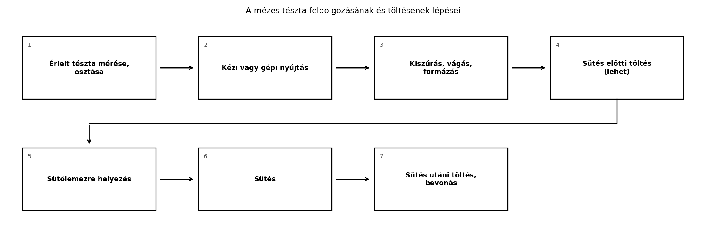

A mézes tészta akkor válik mézeskaláccsá, amikor a megérlelt, átgyúrt tésztát kinyújtjuk, kiszúrjuk vagy kivágjuk, majd megtöltjük. Ha a lap nem egyenletes vastagságú, a vékony részek megégnek, a vastagok nyersek maradnak. Ha a kiszúrt figurák között nem hagyunk elég helyet, a sütőlemezen összesülnek. Ha pedig a töltelék rosszul záródik, kifolyik, és a termék ragad, deformált vagy élvezhetetlen lesz. Ebben az alfejezetben azt tanuljuk meg, hogyan osztjuk, nyújtjuk, formázzuk és töltsük a mézes tésztát úgy, hogy a sütés után szép, tiszta, jól tölthető lapokat és figurákat kapjunk.

A folyamat egyszerű, de minden lépésnél más a cél: az osztásnál az egyenletes tömeg, a nyújtásnál az egyenletes vastagság, a formázásnál a kívánt alak, a töltésnél a töltszázalék és a zárás, a lemezre helyezésnél a terülés és a sütési egyenletesség. A következő részekben ezt a sort bontjuk ki.
Definíció. A mézes tészta osztása azt jelenti, hogy a teljes, érlelt tésztatömegből a kívánt termékhez szükséges darabokat – lapokat, rudakat vagy gömböket – választjuk le, még a nyújtás vagy formázás előtt.
A mézes tésztát mindig tömegre osztjuk, nem szemre, mert a sütési idő, a vastagság és a késztermék tömege csak így tartható. A méretre osztás a mézeskalácsnál ritkábban pontos mérés nélküli kockavágást jelent, hanem azt, hogy a kinyújtott lapból a kívánt méretű darabokat vágjuk.
Szabály. Egy darab nyers tészta tömege legyen (g vagy kg), a kívánt darabszám , a teljes tészta tömege . Ha nincs visszamaradó tésztadarab, akkor
illetve
A mézes tésztánál a késztermék tömege a sütési–hűlési veszteség után lesz meg, ezért a feladási tömegre gondolni kell. A feladási tömeg az a nyers tömeg, amelyből a kívánt kész tömeg a veszteség levonása után marad:
Ezt a gondolatot a Tésztahozam, termékhozam, kihozatal és veszteségek alfejezetben már részleteztük. A mézeskalácsnál a veszteség jellemzően 8–14% körüli lehet, de ez a tészta nedvességtartalmától, a sütési időtől és a tárolástól függ (ellenőrizendő: üzemi sütési próba).
Példa (osztás egyszerűen). Van 6,0 kg érlelt mézes tészta. 80 darab azonos méretű mézeskalács-figurát akarunk kiszúrni. Mennyi legyen egy figura nyers tömege?
Számítás.
Ellenőrzés: .
Megjegyzés. A gyakorlatban nem mindegyik figura lesz pontosan 75 g, mert a kiszúrás után visszamaradó tésztaszéleket újra kell gyúrni és újra kinyújtani. Ezért a teljes tésztamennyiséget kissé nagyobbra tervezzük, vagy a szélekből újrahasznosított tésztát is beszámítjuk. A visszagyúrt tészta kissé keményebbé, repedezettebbé válhat, ezért arányát korlátozni kell (ellenőrizendő: üzemi technológiai lap).
A mézes tészta a pihentetés után még mindig viszonylag kemény, de képlékeny, és a kéz melegétől hamar lágyul, ragad. Ezért a nyújtást hűvös helyiségben, kis adagokban, porciózva végezzük.
Definíció. A nyújtás a tészta hengerléssel vagy lapítással történő vékonyítása, amelynek során a tészta vastagsága egyenletes lesz, és a tésztalapból a kívánt formák kiszúrhatók vagy kivághatók.
Kézi nyújtás lépései
A 3–4. lépést, a tipikus hibát és a később tárgyalt, sütés előtt töltött lap rétegrendjét az alábbi ábra foglalja össze.
A 3. kocka hibája a 3. lépés kihagyásából ered: ha nem középről kifelé és nem forgatva nyújtunk, a lap közepe vastag marad. A HTML-kiadásban a lapvastagság csúszkával állítható, és az oldal kiírja, mire alkalmas az adott vastagság.
Gépi nyújtás
A nagyobb tételeknél tésztanyújtó gépet használunk (lásd Nyújtógép, tésztalapító, gyártósorok és a feldolgozó asztal). A gépi nyújtásnál a hengerrést fokozatosan csökkentjük, hogy a tészta ne szakadjon el, és közben ne melegedjen túl.
Gépbiztonság. A tésztanyújtó gépen a védőburkolatnak, a vészleállítónak és a reteszelésnek működnie kell. A hengerpárba nyúlni, a beragadt tésztát a futó gép alól kézzel kivenni tilos. Tisztítás vagy beavatkozás előtt a gépet le kell állítani, áramtalanítani, és újraindítás ellen biztosítani kell. A tésztát adagolókanállal vagy tolólappal vezetjük, nem kézzel.
Számítás a nyújtott lap méretéhez. Adott tömegű tésztából adott vastagságú lap akkor készül, ha a tészta térfogata megegyezik a lap alapterületének és vastagságának szorzatával. A tészta sűrűsége körülbelül (szemléltető érték, tésztánként eltérő). A tészta térfogata:
Ha a vastagság (cm), az alapterület (cm²), akkor , tehát
Példa. 600 g mézes tésztát 4 mm vastagra nyújtunk. Mekkora lesz a lap alapterülete?
Számítás. , , .
Ez például egy lap. Ha vastagabbra, 5 mm-re nyújtjuk, akkor , tehát kisebb lapot kapunk ugyanabból a tésztából.
A kinyújtott lapból formákat kétféleképpen készítünk: kiszúrással (kiszúró formákkal) vagy vágással (kés, derelyemetsző, sablon). A kiszúrásnál a fém vagy műanyag kiszúrót élesen, csavarás nélkül nyomjuk a tésztába, majd óvatosan emeljük ki. A vágásnál sablont vagy vonalzót használunk, hogy a méretek pontosak legyenek.
Szabály. A kiszúrt darabokat a sütőlemezen kellő távolságra helyezzük, mert a mézes tészta a sütőben kissé terül, a széle kissé kerekedik. Általában 1,5–2 cm távolságot hagyunk, de ez a tészta lágyulásától és a kemence hőmérsékletétől függ (ellenőrizendő: sütési próba).
Figurák készítése. A mézeskalács-figurákhoz – báb, szív, csillag, huszár – a tésztát 4–5 mm vastagra nyújtjuk, kiszúrjuk, majd a mintázatot sütés előtt (bélyegzővel, késsel) vagy sütés után (cukormázzal) alakítjuk ki. A részletes mézeskalács-figurákat a Mézeskalács-figurák: ház, báb, szív és huszár alfejezet tárgyalja.
Ház és idomok. A mézeskalácsház falait és tetőit nem kiszúrással, hanem sablonos vágással készítjük. A lapot egyforma vastagságúra nyújtjuk, a sablonokat rátesszük, és éles késsel körbevágjuk. A méretek pontosak legyenek, mert a ház összeállításakor az elemeknek illeszkedniük kell. A sablonok anyaga élelmiszerrel érintkezésre alkalmas, sima, fertőtleníthető műanyag vagy fém (ellenőrizendő: 1935/2004/EK rendeletnek való megfelelés).
A mézes tészták töltését két csoportba soroljuk aszerint, hogy a töltelék a sütés előtt vagy után kerül a tésztába.
Definíció. Sütés előtti töltésnek nevezzük, amikor a nyers tésztalapok közé vagy a formákba a tölteléket még a sütés előtt helyezzük, és a töltelék együtt sül a tésztával. Sütés utáni töltésnél a tölteléket a már megsült, kihűlt vagy langyos termékre visszük fel.
A választás a töltelék hőérzékenységétől és víztartalmától függ. A magas nedvességtartalmú, friss gyümölcsöt, túrót, tejszínt tartalmazó töltelék nem alkalmas sütés előtti töltésre, mert a sütőben kicsurog, a tésztát eláztatja, vagy a mikrobiális kockázat nő. A sütés előtti töltéshez sűrű, kevés vizet tartalmazó, hőálló töltelékeket használunk.
Sütés előtti töltelékek
Sütés utáni töltelékek és bevonatok
Allergén. A diófélék (dió, mandula, mogyoró), a földimogyoró, a szezámmag, a tej, a tojás, a szója és a glutént tartalmazó gabona a kötelezően kiemelendő allergének közé tartozik; a mák nem szerepel a 14 allergén között, de érzékenység előfordulhat. A töltelékeket címkézve, lefedve, külön eszközökkel kell kezelni. A diós töltelék után az asztalt, a kiszúrót, a habzsákot alaposan el kell mosni, mielőtt az adott allergént nem tartalmazó terméket készítenénk. A keresztszennyeződés veszélyét a HACCP-tervben kell kezelni (ellenőrizendő: üzemi HACCP-terv; 1169/2011/EU rendelet II. melléklete).
A töltelék mennyiségét a tészta tömegére vetített töltszázalékkal adjuk meg (lásd Töltelékek, krémek, bevonatok és töltelékszámítás). A töltszázalék azt mutatja, hogy a töltelék tömege hány százaléka a nyers tészta tömegének:
Példa. Egy adag mézes laphoz 700 g nyers tésztát nyújtunk, és 25% töltelékkel töltjük. Mennyi tölteléket mérjünk?
Számítás a töltött darabokhoz. Ha egy töltött mézes rudat készítünk: a nyers tészta 80 g, a töltszázalék 30%, akkor a töltelék , a nyers össztömeg . Ha a sütési–hűlési veszteség 10%, a késztermék várható tömege:
A mennyiségi ellenőrzésnél ezt a kész tömeget kell majd a tűréshatárral összevetni (ellenőrizendő: Magyar Élelmiszerkönyv és az üzemi specifikáció).
A sütőlemezt a mézes tészta alá mindig elő kell készíteni, hogy a tészta ne ragadjon le, és egyenletesen süljön.
Eljárás.
Higiénia. A sütőlemez, a kiszúrók, a habzsákok és a keverőtálak tiszták, fertőtlenítettek legyenek. A tészta nyers, ezért a nyersanyagokra vonatkozó szabályokat be kell tartani: a gyümölcsíz, a diós töltelék hűtve tárolt alapanyag, a munkaasztalon csak a felhasználás időtartamára lehet kint. A hűtést igénylő töltelék 5 °C alatt tartandó, és a termékre kenve is legfeljebb a technológiai idő végéig állhat (ellenőrizendő: HACCP-terv és 852/2004/EK rendelet).
A mézes tészta cukor- és méztartalma miatt a szerszámokon, asztalokon ragadós, gyorsan rászáradó réteg képződik. A tisztítást ezért még a munka közben, illetve közvetlenül a műszak után kell elvégezni.
Tisztítási sorrend:
Gépbiztonság. A tisztítás alatt a gépek legyenek leállítva, áramtalanítva, és a főkapcsolót lezárva vagy kitáblázva, hogy véletlenül se induljanak el. A sütőlemezt forrón ne mossuk hideg vízzel, mert elgörbülhet; előbb hagyjuk hűlni, vagy a gyártó utasítása szerint járjunk el.
Cél. Egyenletes vastagságú mézes tésztalap készítése, kiszúrása és diós–mézes töltelékkel való sütés előtti töltése.
Eszközök és anyagok. Érlelt mézes tészta, diós–mézes töltelék, nyújtófa, vonalzó vagy vastagságmérő pálca, kiszúró formák, éles kés, sütőlemez, sütőpapír vagy zsiradék, kaparó, ecset, mérleg, tiszta kendők, jelölt tárolóedények, kézmosó.
Higiénia. Tiszta munkaruha, hajháló, ékszer nélkül, kézmosás szappanos meleg vízzel, tiszta kötény. A munkafelületet előzőleg fertőtlenítettük. A diós töltelék allergén: a diós munkafázis után az eszközöket külön, alaposan mossuk el, és a mentes termékekhez ne használjuk ugyanazt a kiszúrót.
Gépbiztonság. Ha tésztanyújtó gépet használunk, ellenőrizzük a védőrácsot, a reteszt és a vészleállítót. A gépet csak betanítás után, felügyelettel kezeljük. A hengerrésbe kézzel benyúlni tilos.
Lépések
Ellenőrzési pontok. A lap vastagsága 4 mm ± 0,5 mm; a töltelék mennyisége 20% ± 2%; a szeletek nem nyíltak szét; a lemezre helyezés egyenletes.
Tipikus hibák. Túl lágy tészta: hűteni kell. Túl vastag lap: a közepe nyers marad. Kifolyó töltelék: a töltelék túl híg, vagy a záróél nincs jól rögzítve. Összesült figurák: túl közel helyeztük a darabokat.
A feldolgozott mézes tészta minőségét sütés előtt és után is ellenőrizzük.
Mérés. A nyers darabok tömegét legalább minden tétel elején és közepén mérjük. A készterméknél a sütési veszteséget próba-sütéssel határozzuk meg. A mért értékeket a gyártmánylaphoz hasonlítjuk (ellenőrizendő: üzemi gyártmánylap).
Önellenőrzés – válaszok
1. feladat (A). Határozd meg a fogalmakat: kiszúrás, sütés előtti töltés, feladási tömeg. Írd le egy-egy példával!
2. feladat (A). 5,0 kg mézes tésztából 100 darab azonos méretű mézeskalács-szívet akarunk készíteni. Mennyi legyen egy darab nyers tömege? Ha a sütési–hűlési veszteség 12%, mekkora lesz a késztermék tömege?
3. feladat (B). 800 g tésztából 3 mm vastag lapot nyújtunk. A tészta sűrűsége 1,25 g/cm³. Mekkora a lap alapterülete? Ha a lapból 40 darab kerek formát szúrunk ki, és a szélekből 10% tészta marad vissza, mekkora átlagos tésztatömeg jut egy kiszúrt darabra?
4. feladat (B). Egy mézes rudat készítünk: a nyers tészta 60 g, a töltszázalék 30%. A töltelék diós–mézes keverék. Számítsd ki a töltelék tömegét és a nyers össztömeget. Ha a sütési–hűlési veszteség 15%, mekkora a várható késztömeg?
5. feladat (C). Egy pékségben a mézeskalács-figurák egyik nap a sütőben összefolytak, a másik nap megrepedeztek. Melyik hibához milyen feldolgozási ok vezethetett, és hogyan javítanád a technológiát?
6. feladat (D). Nézd meg a gyakorlati útmutató 5. lépését! A mérésed szerint a tészta 600 g, a töltelék 140 g. Betartottad-e a 20%-os töltszázalékot? Ha nem, hogyan korrigálsz, és mit ellenőrzöl a következő tételnél?
1. feladat (A).
2. feladat (A).
.
A késztermék tömege:
.
Ellenőrzés: 100 darab · 44 g = 4400 g = 4,4 kg, ami a követelmény
szerinti veszteséggel egyező.
3. feladat (B).
Adott:
,
,
.
.
.
A kiszúrt darabokra felhasznált tészta:
.
Egy darabra átlagosan:
.
Megjegyzés: a visszamaradt 80 g széldarabot újra lehet gyúrni, de a
tészta minősége romolhat.
4. feladat (B).
Töltelék:
.
Nyers össztömeg:
.
Kész tömeg:
.
Ellenőrzés: a töltelék aránya a késztermékben is megmarad, de a tészta
és a töltelék vesztesége eltérhet; ezért a számítás közelítő.
5. feladat (C).
6. feladat (D).
A 20%-os töltszázalékhoz töltelék szükséges. A mért 140 g töltelék 23,3%-os arány, tehát nem tartotta be az előírást. Korrekció: a következő tételnél a tölteléket pontosan 120 g-ra mérjük. Ellenőrizzük a mérleg nullázását, a töltelék sűrűségét, és ha a tészta tömege eltér, a százalékot az új tömegre számoljuk át.
A mézes tészta feldolgozása a megérlelt tészta tömegre osztásával kezdődik, hogy a sütési idő és a késztermék tömege egyenletes legyen. A nyújtás történhet kézzel vagy géppel; a cél az egyenletes vastagság, jellemzően 3–6 mm, amelyet mérőeszközzel ellenőrzünk. A formázás kiszúrással vagy sablonos vágással történik; a kiszúrt darabokat a sütőlemezen legalább 1,5–2 cm távolságra kell helyezni a terülés miatt. A töltés lehet sütés előtti – sűrű gyümölcsíz, diós, mákos, zsíros töltelék – vagy sütés utáni – krémes, gyümölcsízes, cukormázas. A töltszázalék a töltelék tömegének aránya a tészta tömegéhez képest; a töltelék mennyiségét mindig mérjük. A sütőlemezt elő kell készíteni zsírozással, sütőpapírral vagy szilikonlappal. A munka során az allergén-keresztszennyeződést elkülönített eszközökkel, alapos takarítással és a HACCP-nek megfelelő sorrenddel előzzük meg. A gépi nyújtó-, vágó- és formázógépeknél a védőburkolat, a retesz és a vészleállító ellenőrzése kötelező; tisztítás csak leállított, áramtalanított gépen végezhető. Továbbvitt eredmény. A mézes tészta feldolgozásánál tanult nyújtási, kiszúrási, töltési és lemez-előkészítési eljárásokat használjuk a Mézes tészták bevonatai alfejezetben, ahol a sütött termékek felületének bevonását és díszítését építjük rá.